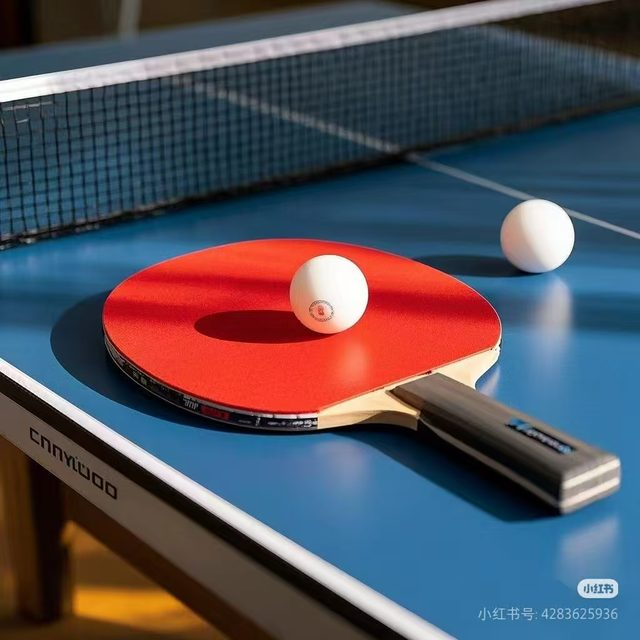
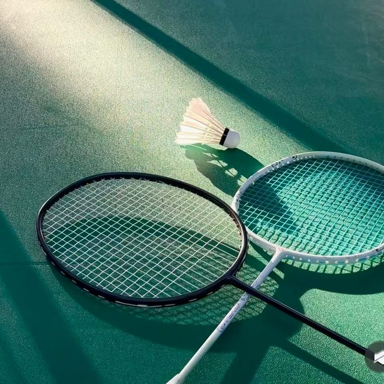
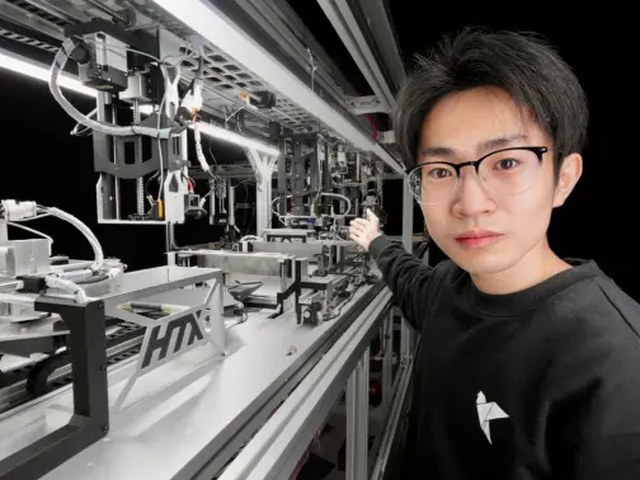
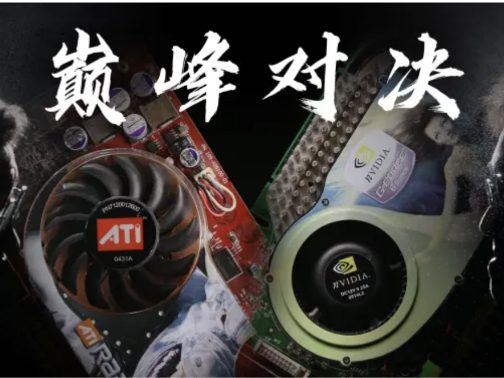
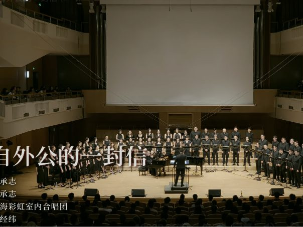
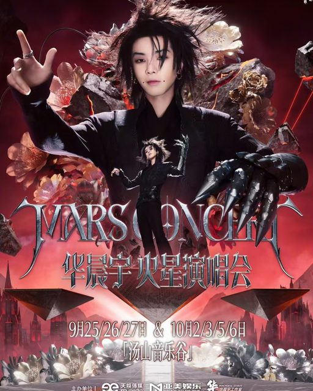

Hobby / Interest
爱好
工程与竞赛之外，构成我这个人的另外几面。
- Groups
- 04
- Scope
- 运动 · UP 主 · 书籍 · 音乐
- Year
- 2025–2026
运动 01


我喜欢的 UP 主 15



虞虞兮西西生活 · vlog
丹丹尼篮球
MMonibaby生活 · 好物
吕吕德华游戏 · 娱乐
宋宋雨琦音乐 · 艺人
啊啊Sai再纽约海外 · 生活
毕毕导科普 · 知识
书籍 02
歌手 / 音乐 03
